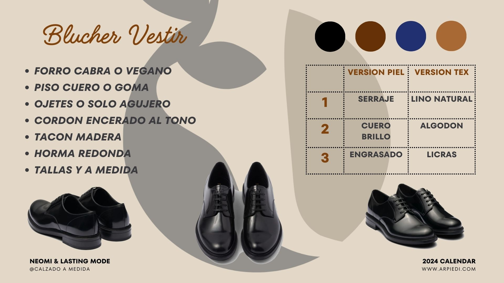
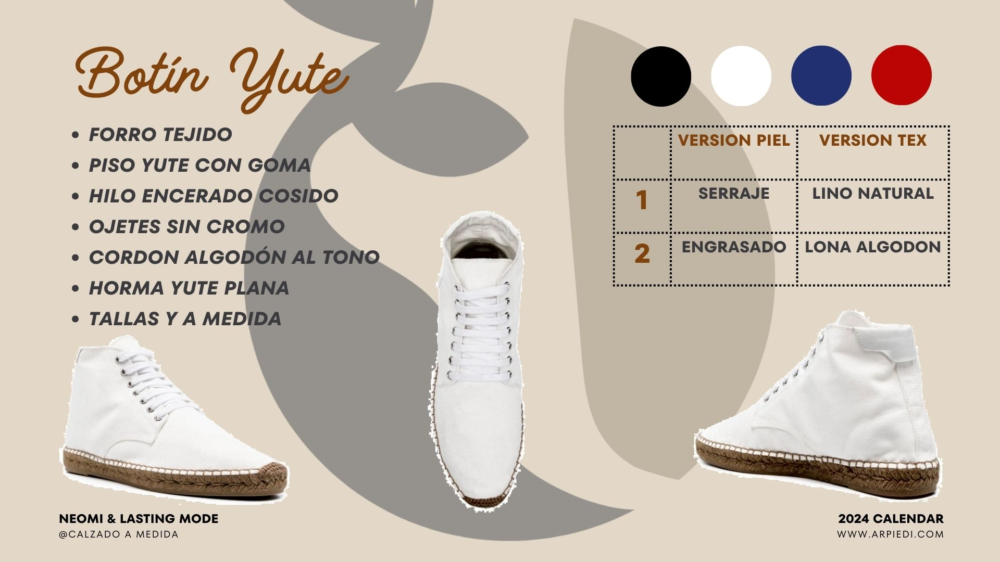

Catálogo de Modelos
Aquí puedes ver algunos de nuestros modelos disponibles. Recuerda anotar el nombre del modelo que te interese para indicarlo en el formulario de pedido.

Blucher Vestir
Un clásico elegante y versátil, adaptable a tus necesidades.
Características Generales:
- Forro: Piel de Cabra o Vegano
- Piso: Cuero o Goma
- Ojetes: Con ojetes metálicos o solo agujero
- Cordón: Encerado al tono del material
- Tacón: Madera
- Horma: Redonda
- Tallas: Disponible en tallas estándar y fabricación a medida
Colores Principales:
Negro
Marrón
Azul Marino
Camel/Tan
(Colores orientativos)
Materiales Disponibles:
- Opción Piel: Serraje, Cuero Brillo, Cuero Engrasado
- Opción Textil: Lino Natural, Algodón, Licras
Nombre para el pedido: Blucher Vestir
Volver a la página de inicio

Botín Yute
Un botín cómodo y natural con piso de yute, ideal para un look casual.
Características Generales:
- Forro: Tejido
- Piso: Yute con Goma
- Hilo: Encerado cosido
- Ojetes: Sin Cromo
- Cordón: Algodón al tono
- Horma: Yute Plana
- Tallas: Disponible en tallas estándar y fabricación a medida
Colores Principales:
Negro
Blanco Azul Medio
Rojo
(Colores orientativos)
Materiales Disponibles:
- Opción Piel: Serraje, Cuero Engrasado
- Opción Textil: Lino Natural, Lona Algodón
Nombre para el pedido: Botín Yute